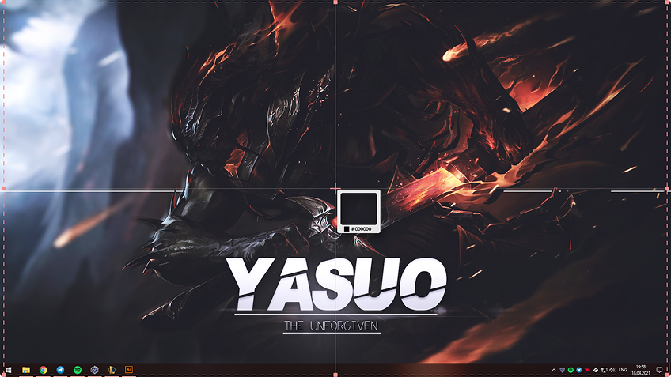

Делайте снимки и записывайте экран в 1 клик
Вместе со Screenshoter можно в один клик сделать снимок или записать происходящее на экране ПК, чтобы поделиться с кем угодно

Бесплатная программа для Windows
Вместе со Screenshoter можно в один клик сделать снимок или записать происходящее на экране ПК, чтобы поделиться с кем угодно

Бесплатная программа для Windows